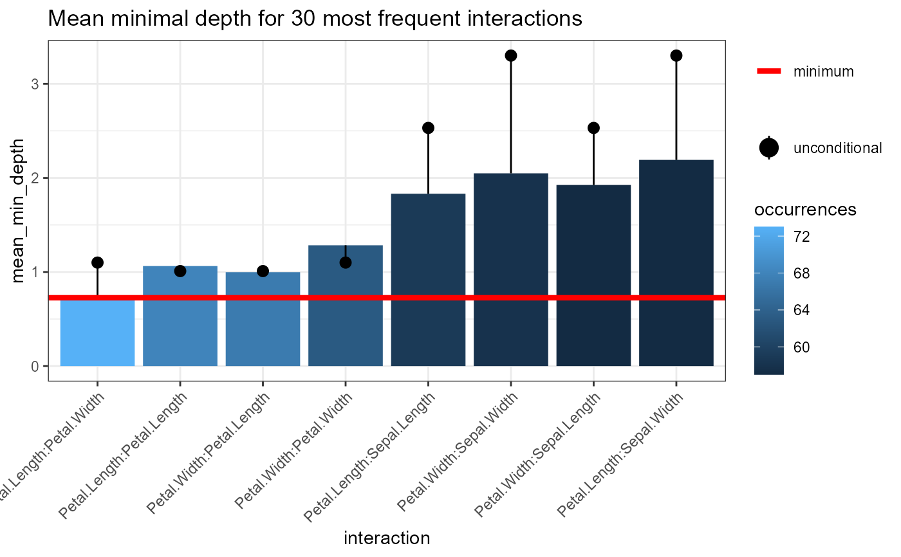

R/min_depth_interactions.R
plot_min_depth_interactions.RdPlot the top mean conditional minimal depth
A data frame produced by the min_depth_interactions() function or a randomForest object
The number of best interactions to plot, if set to NULL then all plotted
A string to be used as title of the plot
A ggplot2 object
forest <- randomForest::randomForest(Species ~ ., data = iris, ntree = 100)
plot_min_depth_interactions(min_depth_interactions(forest, c("Petal.Width", "Petal.Length")))
